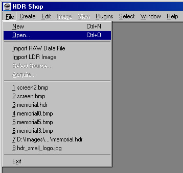
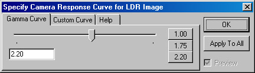
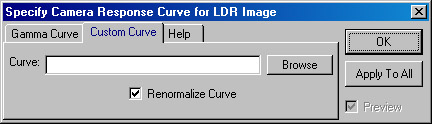

イメージをHDR Shopにロードするためには、Fileメニューから“Open”する方法と、イメージファイルをHDR Shop上にそのままドラッグする方法のどちらかを選択できます。また、同様の方法で、HDR
Shop上に複数のファイルを同時に展開することが可能です。

ロードしたイメージ（画像）がHDRフォーマットであれば、すぐにロードされます。しかし、ロー・ダイナミック・レンジ（Low-dynamic range、以下LDR）フォーマットのイメージ（訳注：jpg,bmpなど）をロードする場合、HDR Shopは“Specify Camera Response Curve”ダイアログを表示します。

HDR Shopは光量の相対値を内部的にピクセルに保存します。残念ながら、従来の8ビット値のイメージの殆どは、このプロパティをもちません。例えば、JPEGの場合、200というピクセル値は、100というピクセル値の２倍の輝度（bright）、という訳ではありません。実際、殆どのフォーマットでは、輝度の上では4倍を超えてしまいます。通常のマッピング（少なくともPC上）は「ガンマ2.2」のマッピングといわれています。これは、光量に比例する数値を取得するためには、ピクセル値の2.2乗を要することを意味します。そのため、殆どのイメージでは、デフォルトのガンマ2.2曲線を利用することが可能です。もしもっと正確にしたいのであれば、チュートリアル「カメラカーブ・キャリブレーション」を読むことで、個々のカメラに的確な曲線を導くことができるでしょう。ダイアログ上の、
‘Custom Curve’タブから、結果として生じたカメラ曲線をロードすることができます。

これで、ロードされたイメージが揃いました。下記に、インターフェースをコントロールする際のコマンドを記します。
＊訳注：表中で省略された用語は、以下の通りです。
LMB: レフトマウスボタン(Left Mouse Button)
RMB: ライトマウスボタン(Right Mouse Button)
MLB: ミドルマウスボタン(Middle Mouse Button)
|
キー |
操作 |
|
LMB |
領域の選択（訳注：マウスを動かしながら） |
|
スペース・バー + LMB |
イメージのパン（スペース・バーを押しながら） |
|
Shift +
LMB |
クリックしたピクセルの輝度にあわせてイメージを再表示 |
|
MLB |
イメージのパン（MLBを押しながら） |
|
MLB + LMB |
ズーム・イン(MLB押しながら) |
|
MLB + RMB |
ズーム・アウト(MLB押しながら) |
|
RMB |
ズームメニューの表示 |
|
+ |
EVの１段増 |
|
- |
ＥＶの１段減 |
|
shift + |
ＥＶの1/10段増 |
|
shift - |
ＥＶの1/10段減 |
|
0 |
ＥＶをデフォルトに戻す |
|
ctrl 0 |
ＥＶをデフォルトに設定 |
|
ctrl + |
ズーム・イン (ctrlキーを押しながら) |
|
ctrl - |
ズーム・アウト(ctrlキーを押しながら) |
|
shift ctrl
+ |
ズーム・インと自動サイズ変更 |
|
shift ctrl
- |
ズーム・アウトと自動サイズ変更 |
|
numpad 5 |
イメージを中心に移動 |
|
ctrl
numpad 5 |
ウィンドウを画像サイズに調整 |
|
R |
時計回りに90度回転（訳注：処理に時間を要する） |
|
shift + R |
逆時計回りに90度回転（訳注：処理に時間を要する） |
|
H |
イメージの上下を反転（訳注：処理に時間を要する） |
|
V |
イメージの左右を反転（訳注：処理に時間を要する） |
|
1 |
レッド・チャンネル・ディスプレイ表示・非表示の切り替え |
|
2 |
グリーン・チャンネル・ディスプレイ表示・非表示の切り替え |
|
3 |
ブルー・チャンネル・ディスプレイ表示・非表示の切り替え |
|
~ |
全チャンネル表示(訳注：jp106キーボードでは無効) |
|
ctrl 1 |
レッド・チャンネルのみ表示 |
|
ctrl 2 |
グリーン・チャンネルのみ表示 |
|
ctrl 3 |
ブルー・チャンネルのみ表示 |
|
ctrl ~ |
全てのチャンネル表示(訳注：jp106キーボードでは無効) |